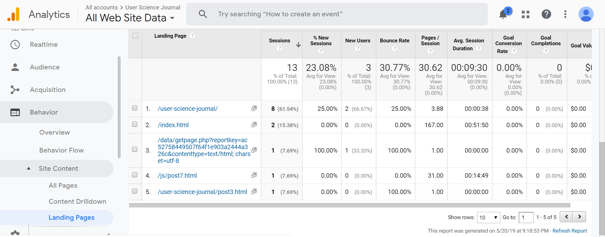
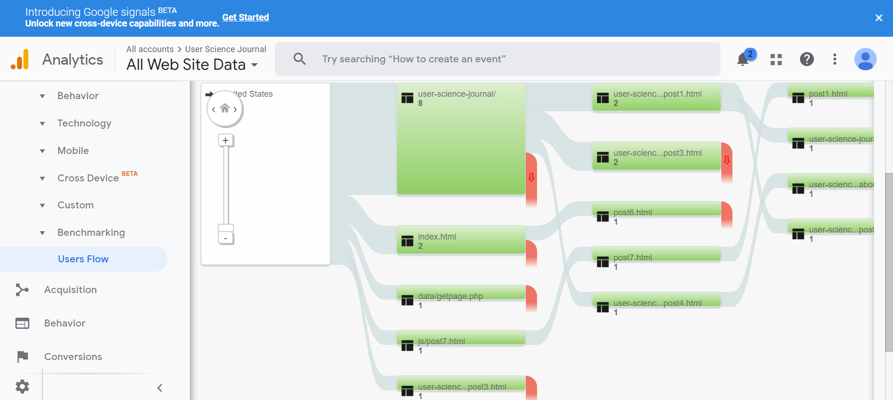

In the seventh week of WATS 4010 our cohort at Seattle University studied how to mine user data using Google Analytics. Although this blog has been tracked by Google since the beginning of this quarter, the number of people viewing the site is still pretty small. Still, with some data you can view your website statistics and begin to understand how Google uses the personal data they collect from email accounts to create a profile of your viewers. Google also tracks how users navigate a website, how long they stay on any particular page, and if they click on anything.
I am personally not completely comfortable with the mining of personal information for marketing or advertising purposes, but marketing is not my focus. I wish to build websites that are easy to use, intuitive, and fast to navigate. Google Analytics can be used to show how users are navigating a website, how they might be missing landmarks, and what jumps out at them. If a user ends up spending time on a page that you assume they will move on from quite quickly, this can be a red flag that the page is not well designed.
Introduction to the Google Analytics Dashboard
Find something to steal here.
Put stuff about UserFlow here

In my next post I will explore setting up custom events on your website that will be triggered by button click and tracked by Google Analytics.
Resources:
Krug, Steve. Don't Make Me Think, Revisited : a Common Sense Approach to Web Usability. [Berkeley, Calif.] :New Riders, 2014.
Google Analytics Link here
Google. Tools for Developers. Lighthouse. Web. 2019. Lighthouse link.
webaim.org. WAVE. Web. 2019. WAVE link